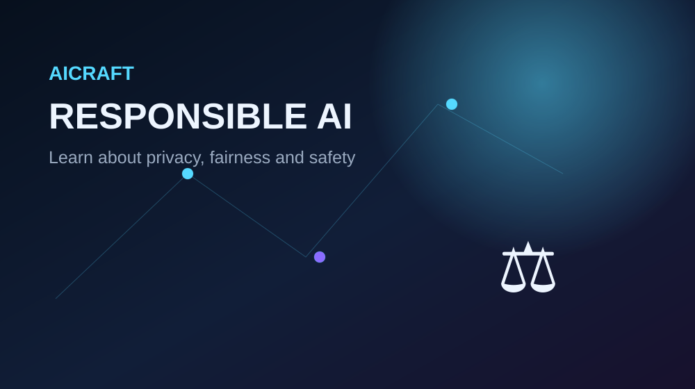

🔒
Privacy
Personal information should be handled carefully. Collect only what is appropriate and protect it from unauthorized access.
AI can be useful, but systems should be designed and used with attention to people, data and potential impacts.

Personal information should be handled carefully. Collect only what is appropriate and protect it from unauthorized access.
AI systems can reflect patterns in their data. Testing for harmful bias is an important part of responsible development.
People should have useful information about important automated decisions and their limitations.
Systems should be tested and monitored so that foreseeable failures and misuse can be reduced.
For important uses, people may need to review outputs rather than treating automated results as automatically correct.
Understanding what AI can and cannot do helps users make informed decisions about technology.